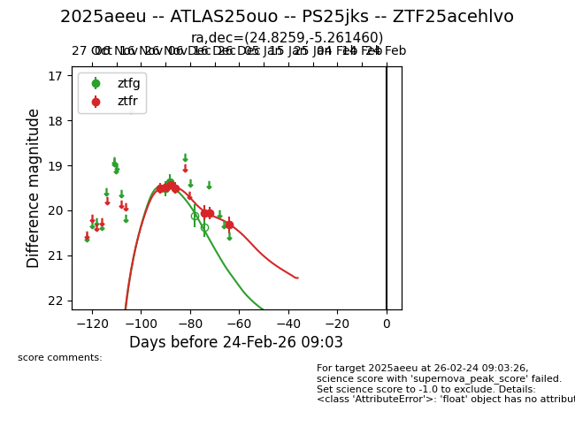
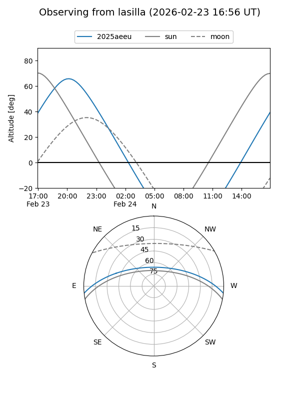
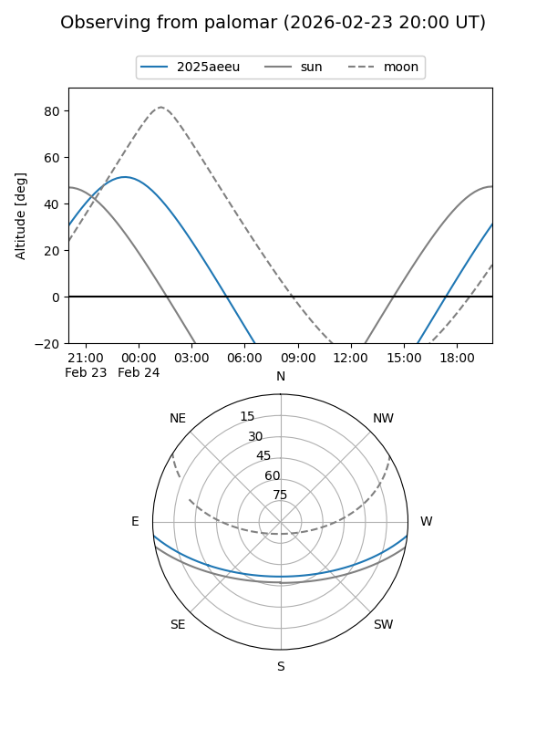
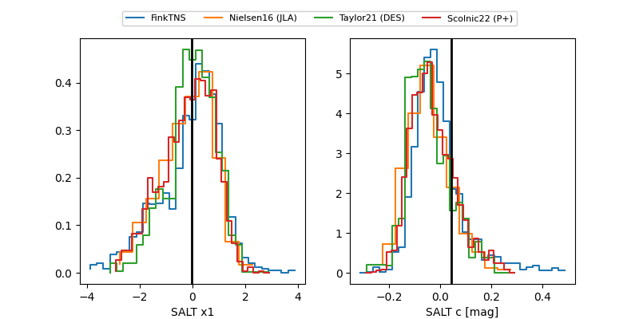

2025aeeu
Target 2025aeeu at 2025-12-28 21:12
Aliases and brokers:
FINK: fink-portal.org/ZTF25acehlvo
Lasair: lasair-ztf.lsst.ac.uk/objects/ZTF25acehlvo
ALeRCE: alerce.online/object/ZTF25acehlvo
TNS: wis-tns.org/object/2025aeeu
YSE: ziggy.ucolick.org/yse/transient_detail/2025aeeu
alt names
ZTF25acehlvo (ztf,fink_ztf)
2025aeeu (tns,yse)
ATLAS25ouo (atlas)
PS25jks (panstarrs)
Coordinates:
equatorial (ra, dec) = 24.8259,-5.26146
equatorial (HMS+DMS) = 01:39:18.22,-05:15:41.26
galactic (l, b) = (152.5903,-65.33917)
Flags:
Photometry:
last ztfg=19.37, ztfr=20.32
2 ztfg, 7 ztfr detections
Lightcurve

Visibility


Additional plots
